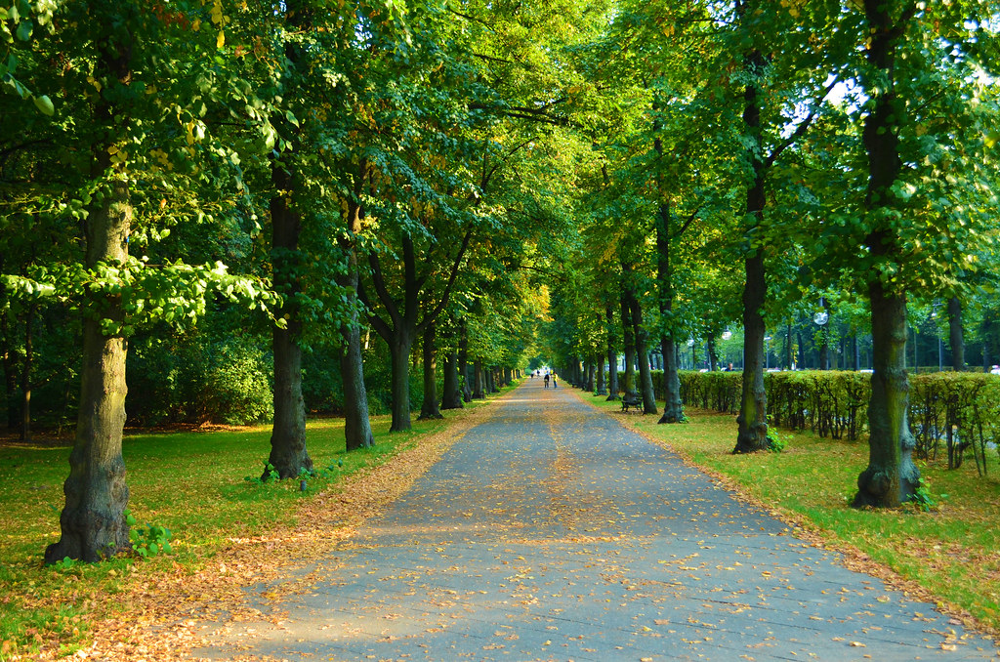
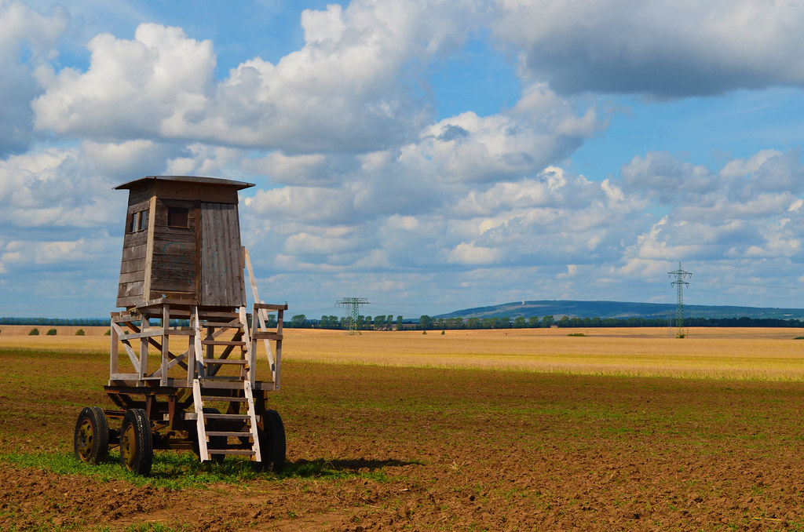
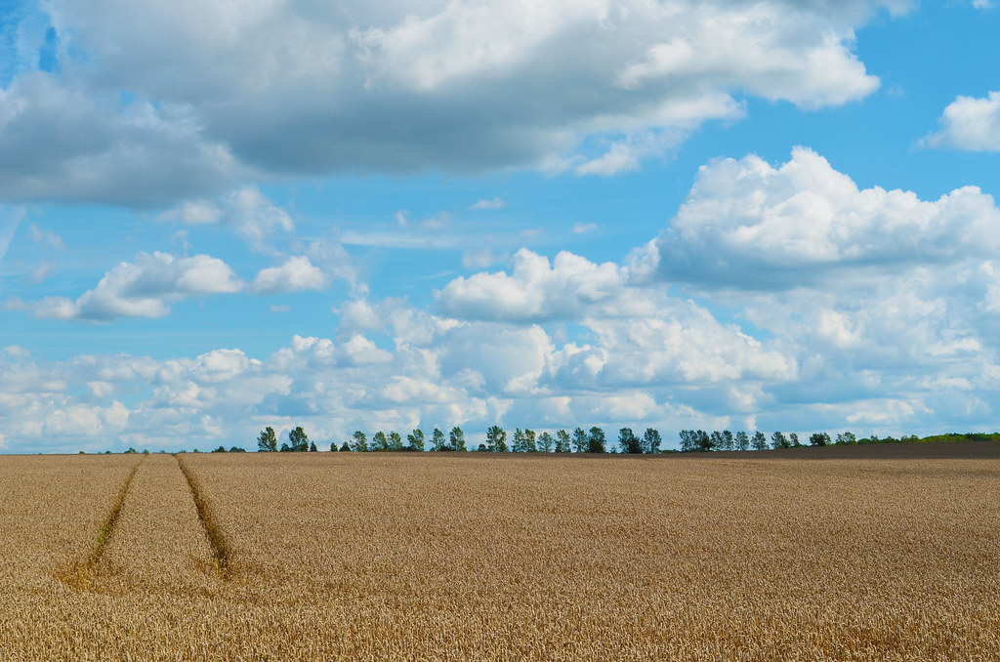
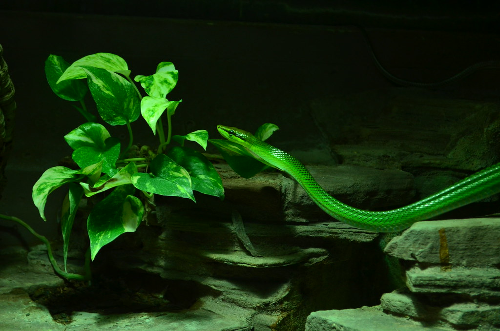
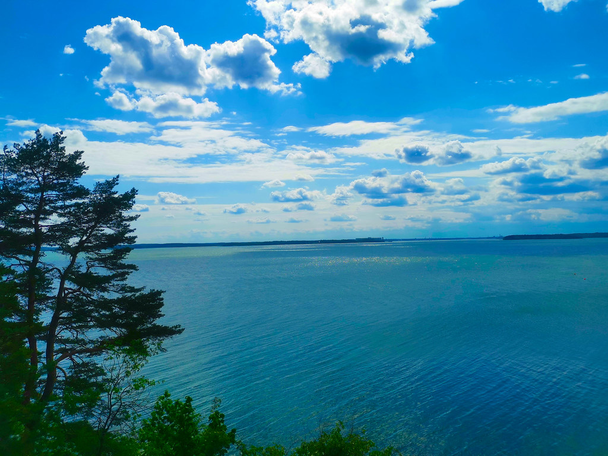
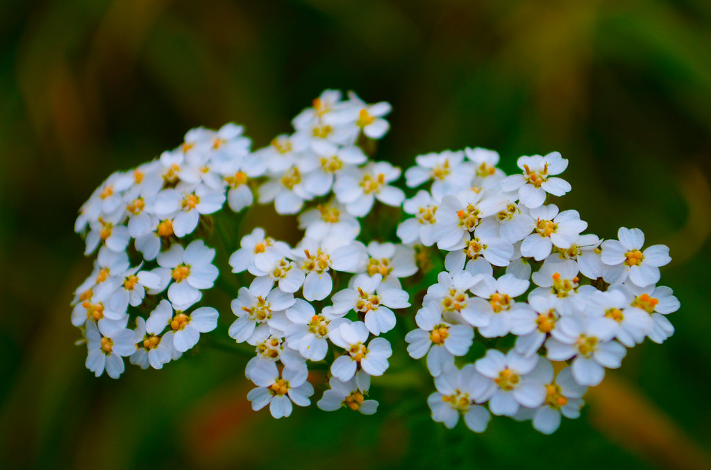
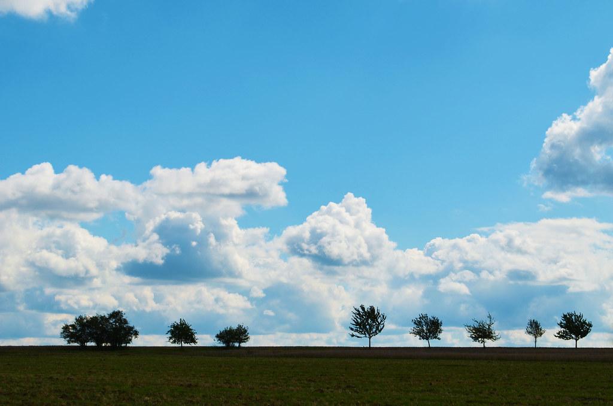
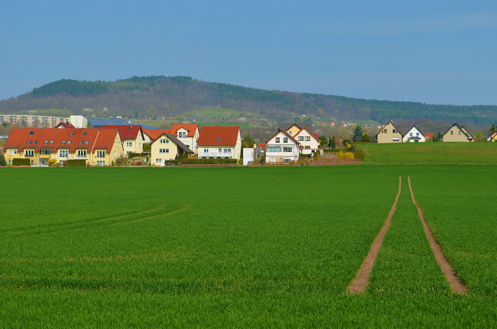
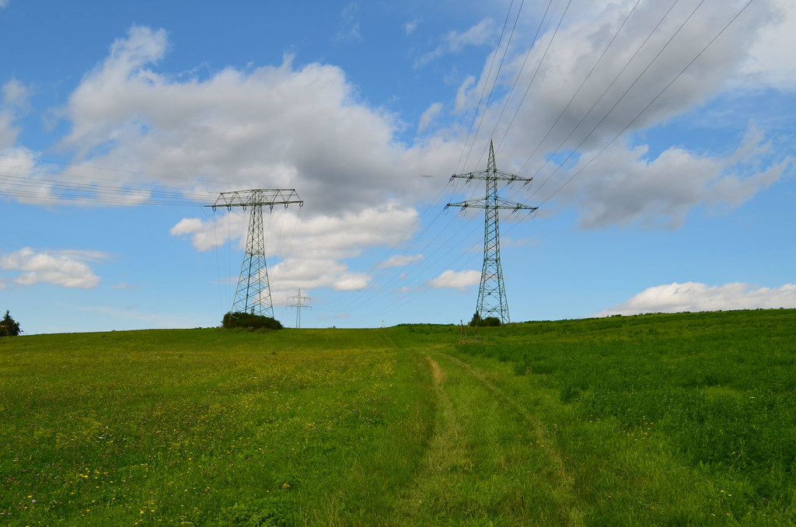

Nature Photography
This gallery showcases nine nature photographs taken by me.









Accessibility Settings
Customize the text size and contrast to make this page easier to read.
Text size: